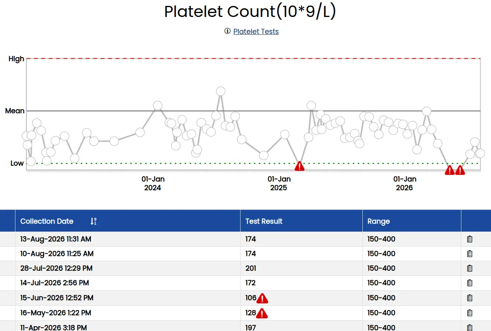

Platelet Count (CBC)

Platelets, also known as thrombocytes, are small blood cells that are essential for blood clotting. Clotting is the process that helps you stop bleeding after an injury. There are two types of platelet tests: a platelet count test and platelet function tests.
What do the results mean?
If your results show a lower than normal platelet count (thrombocytopenia), it may indicate:
- A cancer that affects the blood, such as leukemia or lymphoma
- A viral infection, such as mononucleosis, hepatitis, or measles
- An autoimmune disease. This is a disorder that causes the body to attack its own healthy tissues, which can include platelets.
- Infection or damage to the bone marrow
- Cirrhosis
- Vitamin B12 deficiency
- Gestational thrombocytopenia, a common, but mild, low-platelet condition affecting pregnant women. It is not known to cause any harm to a mother or her unborn baby. It usually gets better on its own during pregnancy or after birth.
If your results show a higher than normal platelet count (thrombocytosis), it may indicate:
- Certain types of cancer, such as lung cancer or breast cancer
- Anemia
- Inflammatory bowel disease
- Rheumatoid arthritis
- A viral or bacterial infection